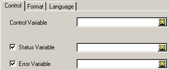
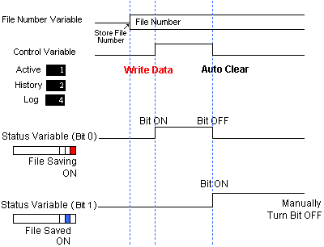
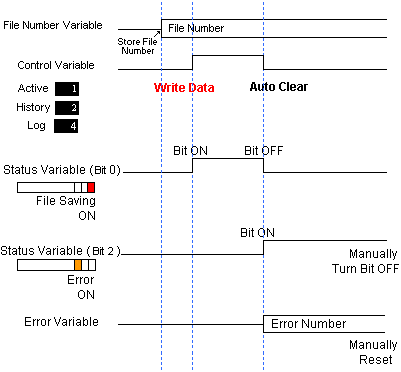
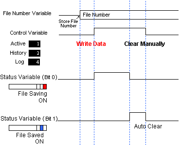
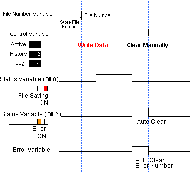

|
|
|
|
|
|
|
|
You can clear the value of the Control Variable, the Status Variable, and the Error Variable. This section describes how these variables are cleared.

Right-click the Alarms & Events node and select properties to display the Alarms & Events node properties.
Select either Control Variable or Status/Error Variable from the Print/Save Clear Option setting.
|
Control Variable |
After saving to file, the value in the Control variable is cleared, but the Error variable and Status variable are not. |
|
Status/Error Variable |
After saving to file, the Status variable and the Error variable is cleared when the control variable is cleared to zero. To clear the Control variable, you need to use a switch, run an external program on equipment, or use another method. |

The Print/Save Clear Option is common between printing and saving alarm and event messages. As a result, the clear options cannot be set up separately for printing and file saving.
The following describes runtime operations when the Print/Save Clear Option is Control Variable.
Write the value you are going to use as the filename into the File No. variable.
See Section 16.3.6.3, Control Tab Settings for information on File names.
Write 1, 2, or 4 into the Control Variable to begin the save to file operation.
|
When file save is successful |
 The Status variable's Bit 0 is ON during the file save operation. When file save is complete, Bit 0 turns OFF, and Bit 1 turns ON. Use a switch, program on equipment, or some other means to turn off Bit 1 in the Status variable. |
|
When an error occurs during file save |
 The Status variable's Bit 0 is ON during the file save operation. When there is a file save error, Bit 0 turns OFF, Bit 2 turns ON, and the error number is stored in the Error variable. Use a switch, program on equipment, or some other means to turn off Bit 2 in the Status variable and reset the Error Variable to zero. |

The above alarms example uses an external 16 bit variable for the Status Variable. If you work with Status Variable values, 1 indicates saving to file, 2 indicates saving is complete, and 4 indicates a save to file error.
The following describes runtime operations when the Print/Save Clear Option is Status/Error Variable.
Write the value you are going to use as the filename into the File No. variable.
See Section 16.3.6.3, Control Tab Settings for information on file names.
Write 1, 2, or 4 into the Control Variable to begin the save to file operation.
Use a switch, run a program from equipment, or use some other means to clear the Control variable to zero.
|
When file save is successful |
 The Status variable's Bit 0 is ON during the file save operation. When file save is complete, Bit 0 turns OFF, and Bit 1 turns ON. When you manually clear the Control variable to zero, Bit 1 of the Status variable turns OFF. |
|
When an error occurs during file save |
 The Status variable's Bit 0 is ON during the file save operation. When there is a file save error, Bit 0 turns OFF, Bit 2 turns ON, and the error number is stored in the Error variable. When you manually clear the Control variable to zero, Bit 2 of the Status variable turns OFF and the Error variable resets to zero. |

The above alarms example uses an external 16 bit variable for the Status Variable. If you work with Status Variable values, 1 indicates saving to file, 2 indicates saving is complete, and 4 indicates a save to file error.